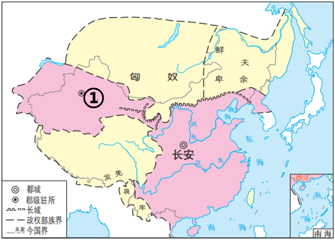

2024年北京中考历史 第4题 解析
4. 下面是某朝代形势图，其中①处机构设立的历史意义是（ ）

A. 有效管辖西域，保障丝绸之路畅通
B. 管理海外贸易，增加国家财政收入
C. 加强了与吐蕃的交流，促进经济和社会发展
D. 中央政府首次在台湾地区正式建立行政机构
【答案】A
【解析】
【详解】由题干形势图中的”长安“”匈奴“并结合所学可知，题干反映的是西汉形势图，西汉在①处设置西域都护，作为管理西域的最高长官，保障丝绸之路畅通，A项正确；宋朝设置市舶司管理海外贸易，增加国家财政收入，与题干不符，排除B项；加强了与吐蕃的交流，促进经济和社会发展的是唐朝，与题干”匈奴“不符，排除C项；中央政府首次在台湾地区正式建立行政机构是元朝，与题干”长安“不符，排除D项。故选A项。